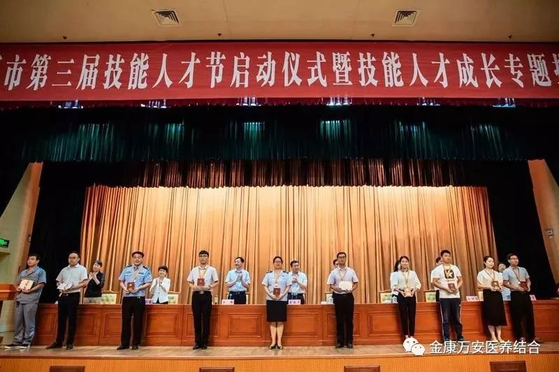
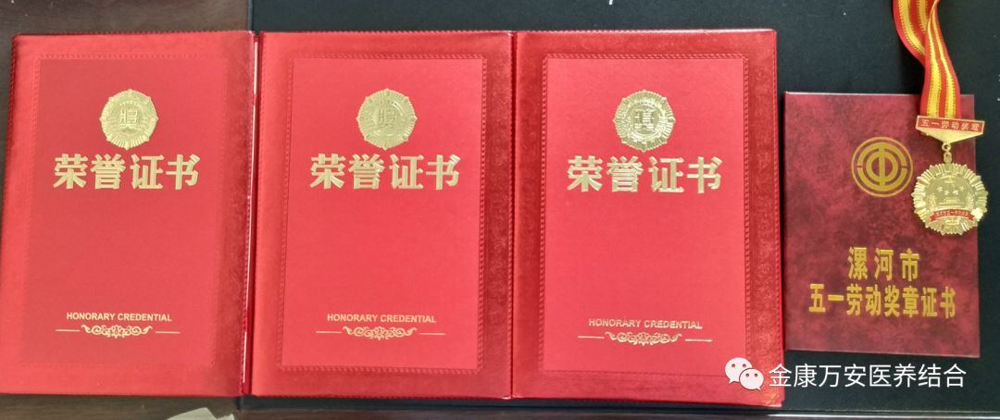
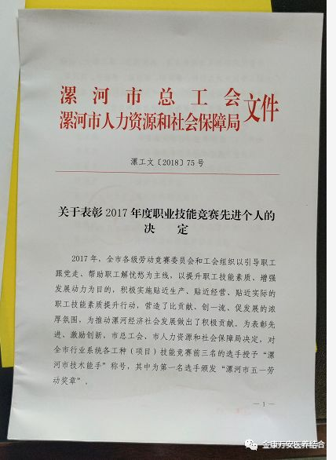
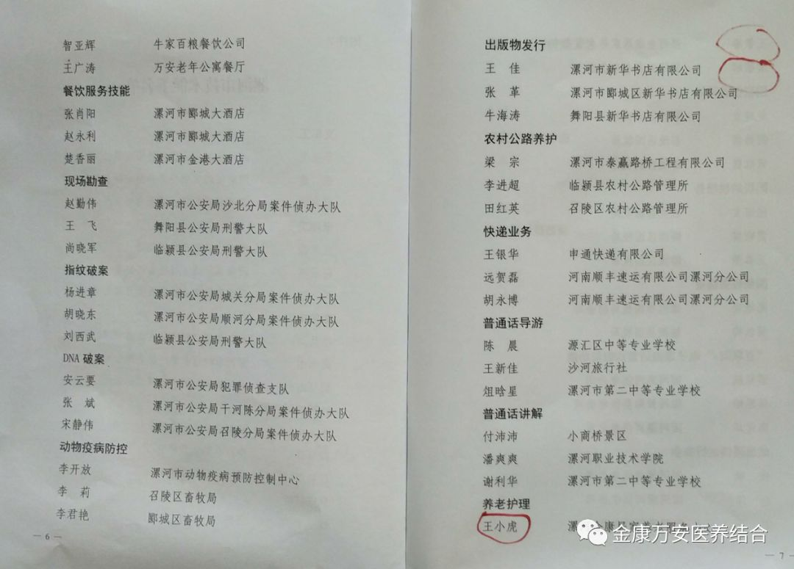
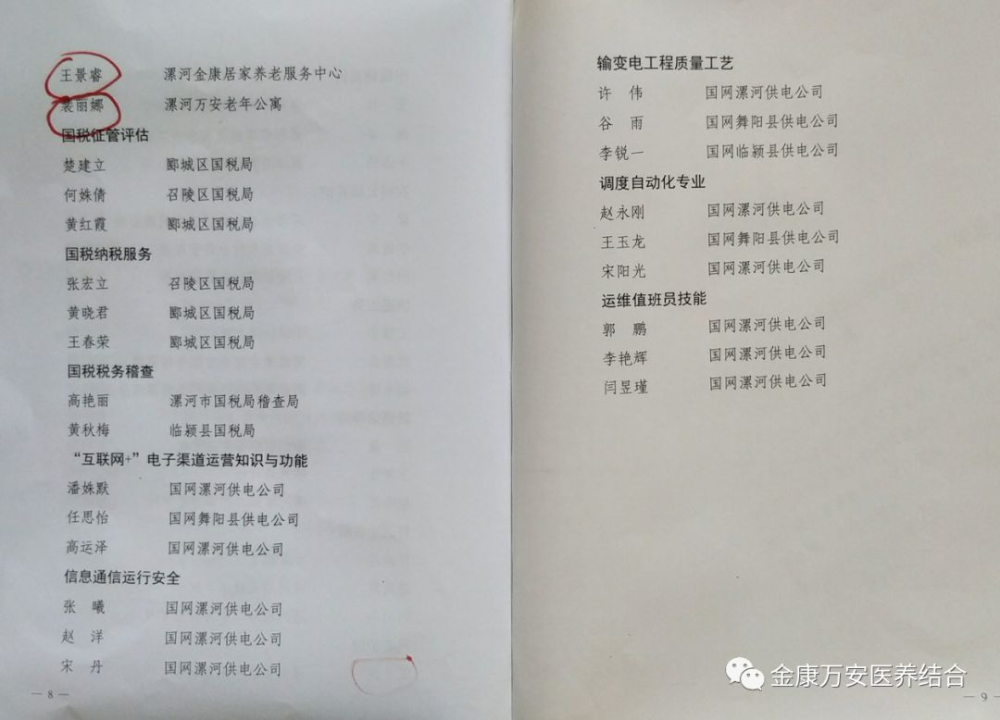
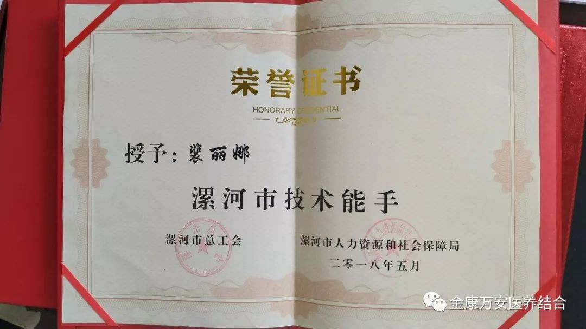
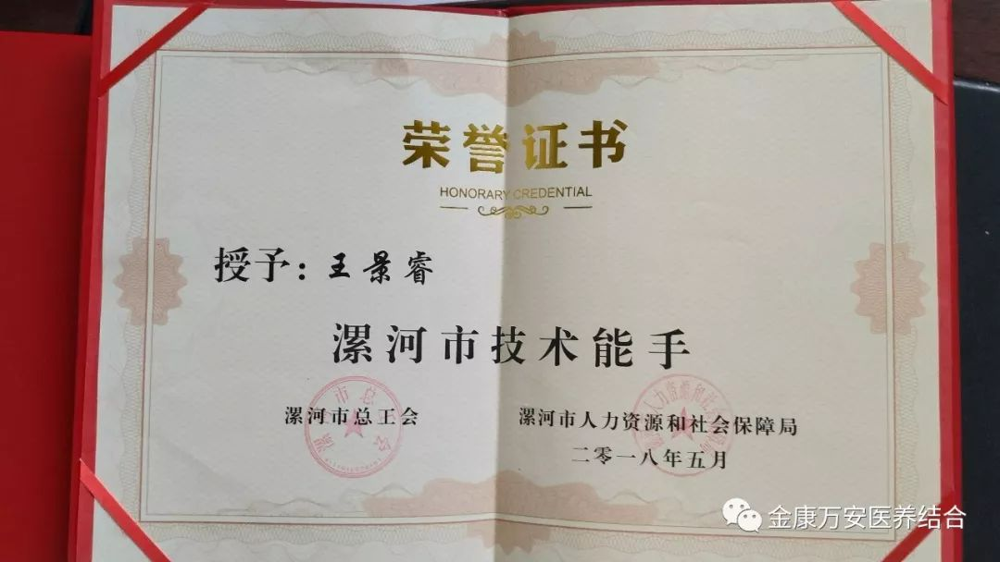
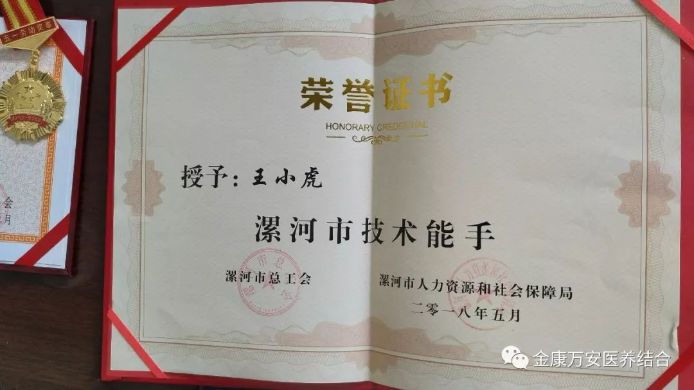
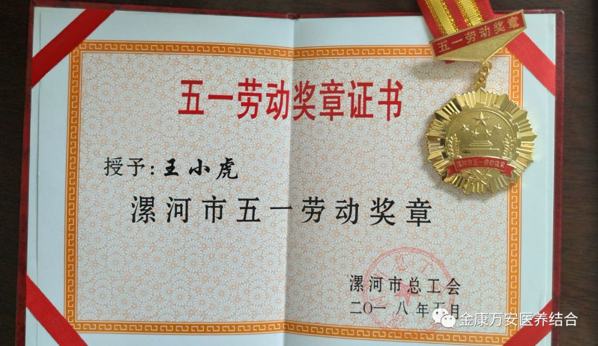

热烈祝贺我院职工在2017年度职业技能竞赛中喜获
“漯河市五一劳动奖章、漯河市技术能手”称号
人气: "" 时间：2018-09-20
近日，在漯河市举行的第三届技能人才节启动仪式暨技能人才成长专题报告会中对2017年度职业技能竞赛先进个人及职工技术创新成果进行表彰， 我院职工王小虎、裴丽娜、王景睿喜获“漯河市技术能手”，同时王小虎被授予“漯河市五一劳动奖章”。


我院获奖人员表示：能够荣获“漯河市五一劳动奖章、漯河市技术能手”荣誉称号，离不开金康万安这个大平台，离不开领导的支持和奋战在一线的全体家人。荣誉只能说明过去，并不能代表未来，在以后的工作中将会继续兢兢业业地做好本职工作，在自我进步的同时力所能及地带动他人，将为老人、患者服务的精神继续传承下去。






会议结束后，漯河市总工会、漯河市人力资源和社会保障局表示：希望受表彰的同志戒骄戒躁、再接再厉、再立新功。全市广大职工要以现进为榜样，学知识、练技能、当能手、展风采，进一步提升自身素质，为新时代漯河全面建设社会主义现代化，奋力开创经济高度质量发展新局面贡献智慧和力量！
